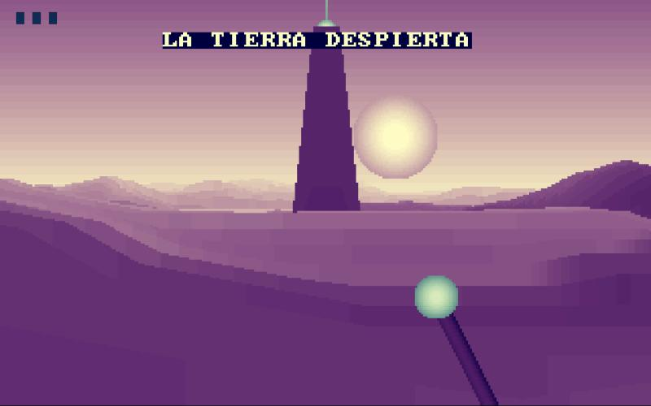
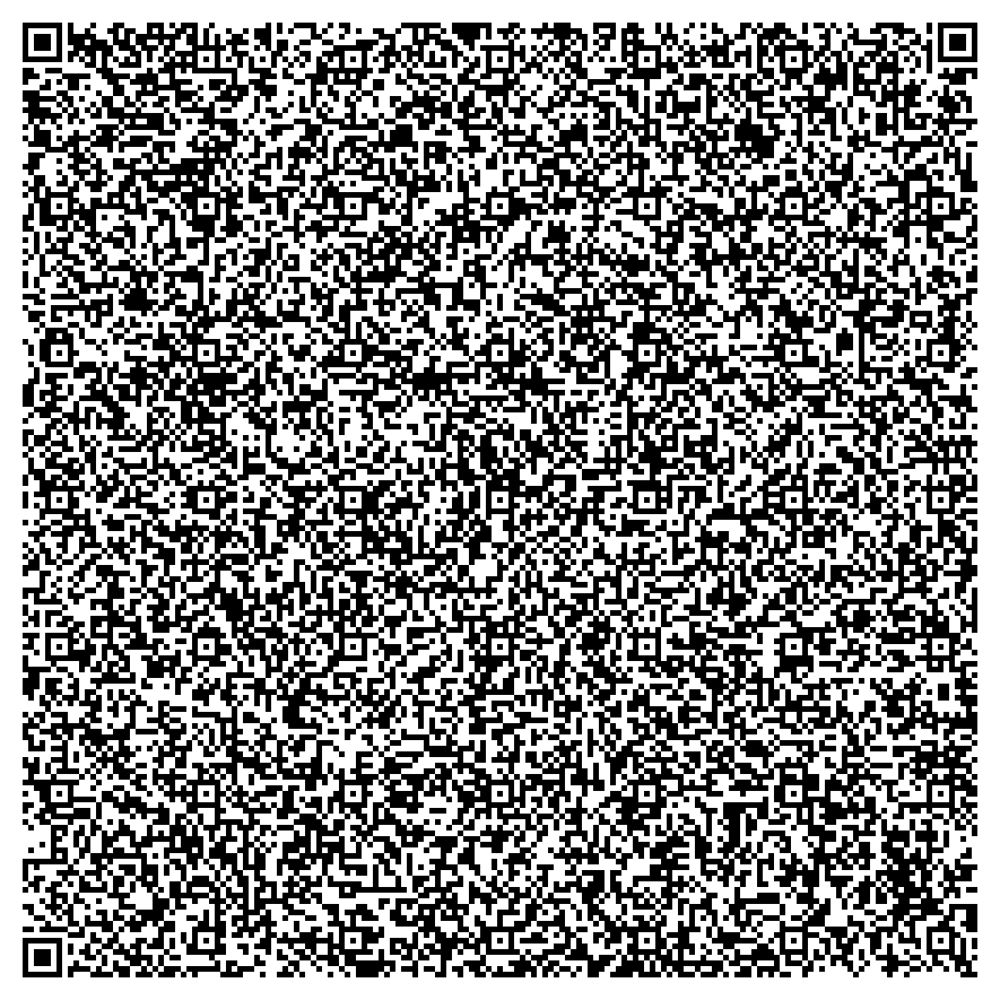

Monolitos
Un mundo abierto en primera persona que cabe entero dentro de un código QR.


Escanéalo con el móvil: el enlace lleva el juego entero, comprimido. No hay servidor de juego ni descargas; esta página solo lo descomprime y lo ejecuta en DOSBox.
Jugar en el navegador2.991 bytesde ensamblador x86 (.COM de DOS)
2.593 bytescomprimido con zopfli
QR 38-Lenlace y juego en un solo código
Cada partidauna tierra distinta
Reúne 3 runas y llévalas a una plataforma para alzar su monolito. Alza los 4 antes de que caiga la noche. Flechas o WASD para andar y girar, espacio para lanzar luz; en el móvil, cruceta y botón LUZ.